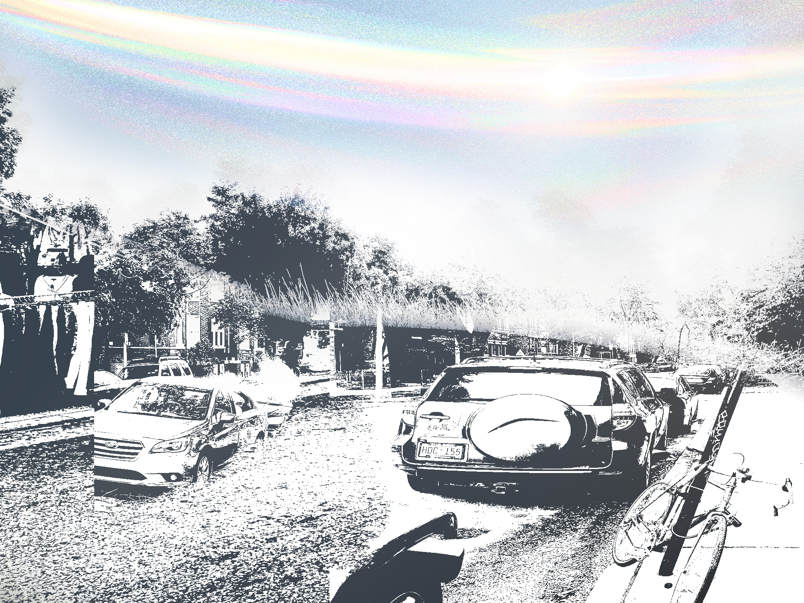

[12/05/2024 19:18:05]
A sense of movement seeped into- making me aware of- my dream. It was slow, but it made me dizzy because it also felt vast. As if I could suddenly detect the earth spinning around the sun.
Eventually it stopped and I was awake. It wasn't a jolt, but more like the measured docking of a barge. My room was filled with a hushed light, morning was well underway, if not over
[12/09/2024 07:42:46]
For a while, I watched tulle silhouettes brush the ceiling, waiting for my body to come to terms with reality. Groaning, I landed my feet on the cold floor. My head felt like a rock... how much did I sleep in? The clock on my nightstand was face down, Star... that little shit. I flipped it back up to see both its hands resting indignantly on the '1'. Jesus, that late? Did my alarms go off? Holding my breath, I fumbled around for my phone till my toe nudged it on the floor. I'm pretty sure I fed her last night; how'd that not wake me up? I flicked it on and sighed deeply: no notifications. Ok. The lunch crowd is either dead or so busy they haven't noticed I'm 3 hours late. I texted my boss "omw," filled Star's bowl and ran out the door with my toothbrush.
[12/16/2024 21:50:37]
A few steps later I stumbled to a stop: my vision was seared white, pain thundered around my skull. I quickly shoved my palms into my eyes, what the hell?! Am I hungover? Inhaling, I waited a moment in the dark to calm my headache. It was surprisingly quiet, except... is someone watering their garden? I lowered my hands and tenderly raised my eyelids: a hot avalanche rushed in and pounded against my head. Biting my lip, I slowly was able to make out edges and shapes between the blown-out static; however, this absurd gamma value didn't settle. I guess it's just really bright out today... or maybe I drank last night? But I don't remember that at all... fuck. Did I black out?
Shaking the feeling that someone has been watching my slapstick, I continued carefully to the street. The crackling sound I heard earlier pattered on. Is someone burning leaves? Where's it coming from? By the time I reached my car, the world still looked over-exposed. I paused before getting in and clenched my brow, why is the street still full of cars? Is it a holiday? Suddenly that sound became piercing like hundreds of hammers on a metal roof and my head throbbed again. What's happening to me? Are my ears popping? The sound beckoned my head upward and I met the gaze of the sun: centered perfectly in the sky like a burning white pupil. Squinting, I noticed something else flickering there. Iridescent ribbons streamed from horizon to horizon, bisecting the sun. It looked like God spilled gasoline onto the sky ...aurora...?
